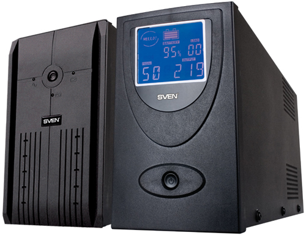

Основные типы и виды источников бесперебойного питания

ИБП) представляет собой автоматическое устройство, основное назначение которого - питание нагрузки за счёт энергии аккумуляторных батарей при отключении сетевого напряжения или выхода частоты и напряжения за допустимые пределы. Кроме этого, в зависимости от используемой схемы, ИБП корректирует характеристики электропитания.
Рассмотрим основные схемы организации ИБП.
1. Резервный ИБП (off-line)
Данный вид ИБП работает по следующему принципу: питание нагрузки напряжением сети при его наличии и быстрое переключение на резервную схему питания (батарея и инвертор) при его отключении или выходе напряжения и частоты за допустимые пределы. При работе ИБП от сети батарея подзаряжается автоматически.
Наличие автоматического переключателя питания нагрузки (сеть/батарея) является отличительной особенностью данной схемы. Резервный ИБП применяется для питания ПК или рабочих станций локальных вычислительных сетей. Данная схема организации лежит в основе практически всех недорогих ИБП малой мощности, предлагаемые на отечественном рынке.
Основные достоинства: экономичность, компактность, малый вес, относительная дешевизна.
2. Интерактивный ИБП (line-interactive)
Принцип работы данного (ИБП) полностью идентичен резервному, за исключением ступенчатой стабилизации выходного напряжения посредством коммутации обмоток автотрансформатора.
Интерактивный ИБП применяется для питания ПК, рабочих станций и файловых серверов локальных вычислительных сетей, для офисного и другого оборудования, чувствительного к неполадкам в электросети.
Основные достоинства: экономичность, компактность, синусоидальная форма выходного напряжения, шаговая стабилизация выходного напряжения.
3. Он-лайн ИБП (on-line)
Данный ИБП работает по принципу двойном преобразования напряжения: входное напряжение преобразуется в постоянное при помощи выпрямителя, обратное преобразование в переменное напряжение производится при помощи обратного преобразователя (инвертора).
Он-лайн ИБП применяется для питания файловых серверов и рабочих станций локальных вычислительных сетей, а также любого оборудования, предъявляющего повышенные требования к качеству сетевого электропитания.
Схема он-лайн признается в настоящее время самой совершенной, обеспечивающей полную защиту нагрузки от всех существующих неполадок электропитания.
Основные достоинства: полная фильтрация сетевого напряжения от помех и выбросов, при этом помехи, создаваемые нагрузкой обратно в сеть не пропускаются, при работе от сети и от батарей обеспечивается питание нагрузки "чистым" стабильным по величине и форме синусоидальным напряжением, мгновенное переключение на батареи, отсутствие при этом любых переходных процессов.